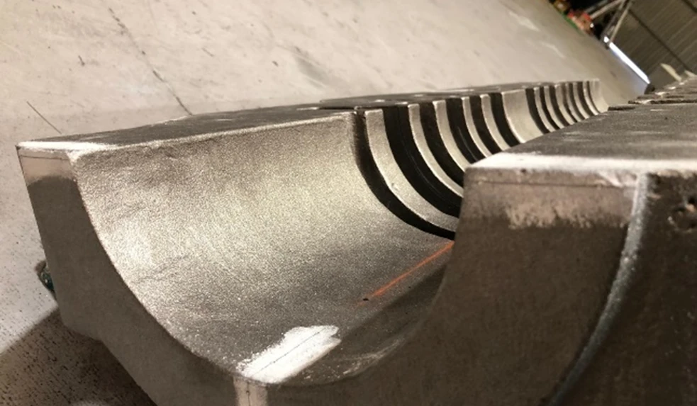

Materiales
Materiales que mecanizamos.
Aceros al carbono, aleados, inoxidables, dúplex y superdúplex en estado fundido, y aleaciones base níquel. Otras aleaciones, bajo consulta.
Familias y grados
Familias de materiales que mecanizamos.
Siete familias de acero fundido y las aleaciones base níquel, con grados de ejemplo de cada una.
| Familia | Grados de ejemplo |
|---|---|
| Aceros al carbono para usos generales | WCB, WCC, 1.0619, GS45, GS52, GS60, … |
| Aceros al carbono para baja temperatura | LCB, LCC, GS20Mn5, GS212Mn5, … |
| Aceros aleados | WC1, WC6, WC9, C5, C12, … |
| Aceros aleados para baja temperatura | LC1, LC2, LC3, … |
| Aceros de herramientas | GS42CrMo4, … |
| Aceros martensíticos y martensítico-ferríticos, para servicios generales y baja temperatura | CA15, CA6NM, 1.4008, … |
| Aceros inoxidables austeníticos, dúplex y superdúplex, para usos generales y baja temperatura | 1.4408, 1.4468, 1.4470, 1.4519, 1.4308, 1.4552, 1.4581, CF3, CF3M, CF8, CF8M, CF8C, CN7M, CN3M, dúplex, superdúplex, … |
| Aleaciones base níquel | 2.4883, 2.4697, … |
Ejemplos no exhaustivos. Consulte otros grados con su especificación.
Resistencia a la corrosión
Grados de referencia por resistencia.
Cinco grados habituales ordenados de menor a mayor resistencia a la corrosión.
- WCBAcero al carbonoA216 WCBEN 1.0619
- CF8InoxidableA351 CF8EN 1.4308
- CF8MInoxidable con MoA351 CF8MEN 1.4408
- 4ADúplexA890 4AEN 1.4470
- 5ASuperdúplexA890 5AEN 1.4469
Normas ASTM y equivalentes EN orientativos.
Otras aleaciones
Otras aleaciones.
Le confirmaremos la viabilidad del mecanizado y de los ensayos. Para valorar su consulta, indíquenos:
- MaterialGrado o especificación (p. ej. ASTM A890 5A).
- PlanoPDF, STEP o DWG, con su revisión.
- CantidadesUnidades y calendario de entregas previsto.
- EnsayosEnsayos y documentación de calidad requeridos.
- PlazoFecha de necesidad de las piezas.

Consulta de material
Consulta técnica de materiales.
Adjunte el plano y la especificación del material.
info@amlcentrifugal.com
+34 948 46 16 03
+34 948 46 16 03